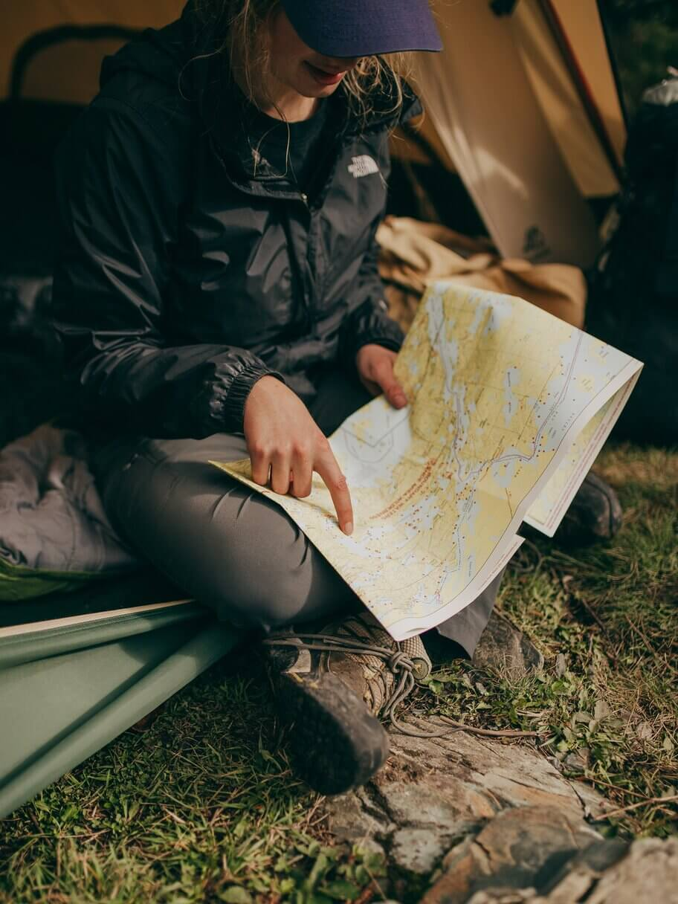

Plannig your Trip
Planning
Having a go to checklist is a must, have one that you can always go back to. Edit this list before, during, and after your camp trip. The more you camp the more you become an expert at what works and doesn’t work for you / your family. (I find myself always remembering last minute what I forgot to bring. ) It is best to print directions, or maps beforehand because generally camping areas have little to no reception. Do a quick check for weather conditions to make sure you pack the right clothes and or equipment. Planning your meals ahead of time helps to make sure you don’t forget key ingredients. Make sure you always tell someone outside of your circle where you will be going, there has been plenty of recorded incidents make sure you don’t add to the statistics.
Essentials list
• Sleeping bag- depending on the temperature of the night where you are sleeping, you want to have a sleeping bag that is rated for the weather that you will be facing. For example, if the temperature at night is 40 degrees, your sleeping bag needs to be rated for at least 20 degrees.
• Sleeping pad- the ground is not your friend, imagine sleeping on a wood plank, a sleeping pad makes sure you have extra cushion comfort. it does not have to be expensive; this will just separate you from the cold hard ground. You can also take a air mattress but it takes up more space.
• Tent – There is many different tents out there. Make sure that the tent you choose will fit you, your family and any extra items you want to keep safe and dry. For example, if it is a family of four, it is best to spend the extra money to get a six-person tent, it gives you extra clearance, that can help the space feel less crowded.
• Flashlight, lamp & headlamp- Because you are away from the city it gets really dark at night. Depending on the moon phase you can find yourself in a pitch-black environment when camping. It is extremely important to not rely on your cellphone light only. A flashlight with at least one set of extra batteries will come in handy.
• Knife- good utility tool
• Camping chair- no one likes to sit on the dirt, a chair will be more comfortable place to sit by the fire and watch the shooting stars.
• Food & water- basic human necessities
• Firewood – can keep you warm / cooking and roasting marshmallows -it’s a must!
** This list is based off a tent camping, not for backpacking or RVs